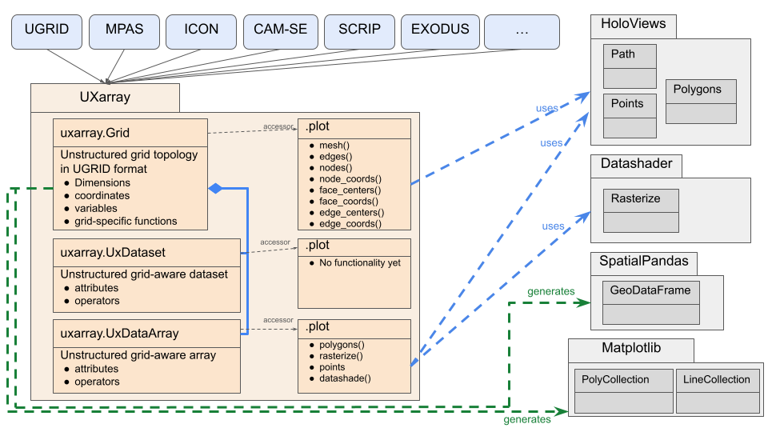

Plotting Libraries
We will introduce functionality from two visualization libraries and how they are being utilized by UXarray for unstructured grids visualization purposes.
Before diving deep into these, looking into the current snapshot of the UXarray visualization design through a simple Unified Modelling Language (UML)-like diagram could be helpful to better understand UXarray’s relation with such libraries.
Note
The following design diagram is actually provided in the Plotting API section along with key takeaways about it. We highly recommend to check them out as well.
UXarray Plotting API Design
{kind=link}
Now, let us look into the visualization libraries that UXarray relies upon or provides an interface with.
HoloViz
HoloViz is a stack of tools (such as Holoviews, Datashader, Geoviews, SpatialPandas, hvPlot etc.) that provide high-level functionality to visualize even the very large datasets efficiently in Python. HoloViz packages are well-suited for unstructured grid visualization because:
They provide rendering functionality for both vector geometries and rasterization, which will be detailed in the next section. Such functionality is much needed for UXarray’s grid topology and data visualization purposes.
Unlike Matplotlib, they support using the connectivity information that comes from the unstructured grids
They are designed to be scalable for even the largest datasets that’d be generated as result of kilometer-scale analyses
Important
UXarray takes care of the vital tasks such as recognizing unstructured grids from various formats (such as UGRID, MPAS, Scrip, Exodus, etc.) and representing them in a unified UGRID-like format, providing the data structures and functionality necessary for convenient preprocessing of the grid, and wrapping up HoloViz packages’ functionality to enable unstructured grids-specialized, high-level visualization functions.
Let us look at the HoloViz packages that we utilize under the hood of UXarray to provide high-level, scalable visualization functions.
HoloViews
Holoviews houses several elements (e.g. Path(), Points()) that we wrap up in the UXarray plotting accessors to enable visualization of grid geometries such as nodes and edges. Similarly, other elements of this package (e.g. Polygons()) are used by UXarray for various polygon vector visulization purposes.
Important
UXarray allows both Matplotlib and Bokeh backends to be chosen in visualization functions as they are provided by Holoviews (in addition to Plotly).
Datashader
Datashader is the graphics pipeline system of the HoloViz tool stack for creating meaningful representations of large datasets quickly and flexibly. We utilize Datashader rasterization methods, transfer functions, and other shading operators in our polyon rasterization code.
GeoViews
Actually, we do not wrap GeoViews functionality in UXarray. Instead, we leave it up to the user’s preferences to explore and visualize geographical, meteorological, and oceanographic datasets and features using the visulization outputs from our UXarray plotting functions. However, we love to enrich the plots in our documentation and examples with addition of a lot of Geoviews features such as ocean, land, coastlines, etc.
Spatialpandas
Spatialpandas is a package that provides Pandas extension arrays for spatial/geometric operations. This package has an element called GeoDataFrame, which can be used directly by packages from the HoloViz stack such as hvPlot, Datashader, Holoviews, and Geoviews. Therefore, UXarray provides Grid conversions to GeoDataFrame to allow the user to perform visualizations direclty in HoloViz packages rather than needing to use our UXarray plotting functions.
Because this cookbook’s main goal is to showcase UXarray’s own visulization capabilities, we will not detail this conversion here but provide a link to a UXarray usage example that demonstrates this.
Matplotlib
Matplotlib is the workhorse of Python visualization needs, for both general and geoscientific purposes. However, when it comes to visualizing unstructured grids, Matplotlib’s:
Functionality is limited such that there is no way to use the connectivity information that comes with the unstructured grid
Scalability especially for kilometer-scale (e.g. individual storm-reoslving) resolutions is limited.
We still support Matplotlib as a backend option in our visualization functionality, which will be covered in the next chapter.
Moreover, just like conversion to Spatialpandas.GeoDataFrame, we provide conversion functions from UXarray to Matplotlib data structures such as collections, which can be utilized for visualizations directly in Matplotlib after the conversion.
Collections
Detailed information about Matplotlib’s Collections API can be found here. In Uxarray, conversions to LineCollection and PolyCollection are provided for visualizing Grid Geometries and data variables, respectively.
Warning
While these conversion functions have already been released, we have observed some issues with the resulting Matplotlib plots after the exceution of these functions, and the bug-fixing of that is WIP. Hence, we don’t have an officially released documentation/example about these functions yet.
Cartopy
Cartopy is originally a Python library for cartographic visualizations with Matplotlib; however, they provide a number of features such as crs, i.e. Coordinate Reference Systems (a.k.a. projections), that are significant for cartographic visualizations.
While UXarray does not rely upon Cartopy, we support projections through our visualization functions with the help of Cartopy.crs. The use of such projections in the UXarray functions will be showcased in the next chapter; thus, let us stop at this point.